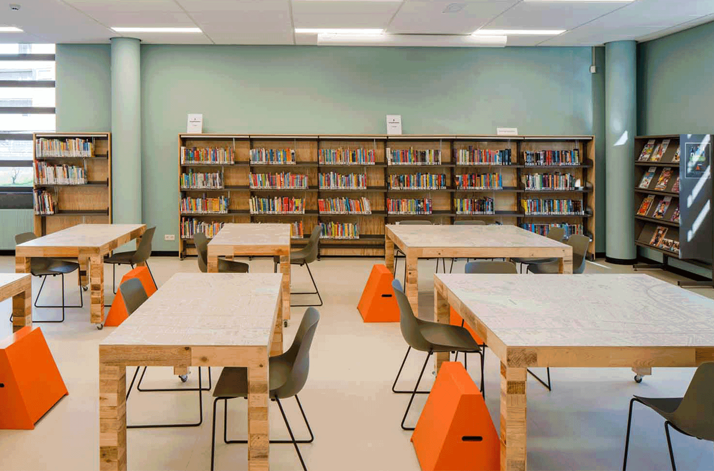

In gesprek met stadsdeelvoorzitter Tanja Jadnanansing: een inspirerend gastcollege over
rechtvaardigheid en bestuur.
Tanja Jadnanansing, voorzitter van het bestuur in stadsdeel Zuidoost, geeft jaarlijks een
gastles aan studenten Bestuurskunde tijdens het vak De Rechtvaardige Stad. Ze bespreekt
haar visie op rechtvaardigheid en de rol van bestuurders in onze samenleving,
en reflecteert op ervaringen en inzichten die ze graag doorgeeft aan studenten.

Motuin & Hoektuin: De groene verbinders van de Transvaalbuurt.
Het is een nazomermiddag in de Hoektuin en Sameena Safiruddin, een van de oprichters van
deze groene oase in de stad, zet thee van zelfgeplukte
kruiden voor ons neer. Zij en Eelco
Baarda, vaste vrijwilliger bij meerdere tuinen in Oost, vormen het kloppende hart van deze
zeldzame stadstuin.

De OBA en de HvA zetten zich samen in voor de wijk:
‘
Het is heel belangrijk dat je met elkaar
goed voor de stad zorgt, en vooral voor de mensen die dat het hardst nodig hebben
’
De Openbare Bibliotheek Amsterdam (OBA) en de Hogeschool van
Amsterdam (HvA) werken
sinds 2021 intensief met elkaar samen. De Buurtcampus
-
locaties zijn gevestigd in wijklocaties
van de bibliotheek. Daar worden activiteiten voor bewoners georganiseerd, zoals
voorleesactiviteiten voor kinderen of ‘Bakkie in de Bieb’: een wekelijkse koffie-moment waarbij bewoners en studenten elkaar ontmoeten.

De nieuwe look van de Buurtcampus:‘Deze plek is de huiskamer van de stad’
De Buurtcampus werkt samen met de Openbare Bibliotheek Amsterdam (OBA) en is sinds
deze samenwerking gevestigd op drie bibliotheeklocaties: OBA Linnaeus in Oost,
OBA Ganzenhoef in Zuidoost, en OBA Geuzenveld in Nieuw-West. Rinke van Couwelaar is oud-projectleider bij de Buurtcampus en inmiddels met pensioen. Hij vertelt graag over het
uiterlijk van de Buurtcampus en welke ideeën daarachter schuilgaan.